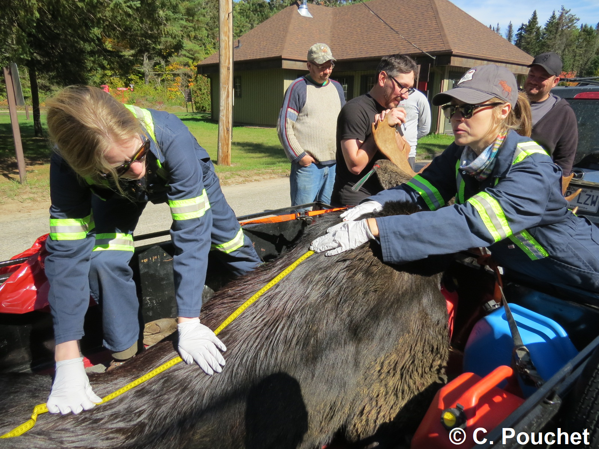
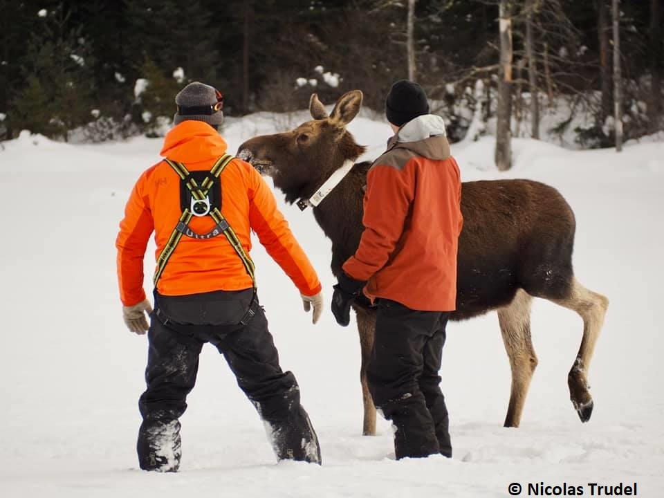
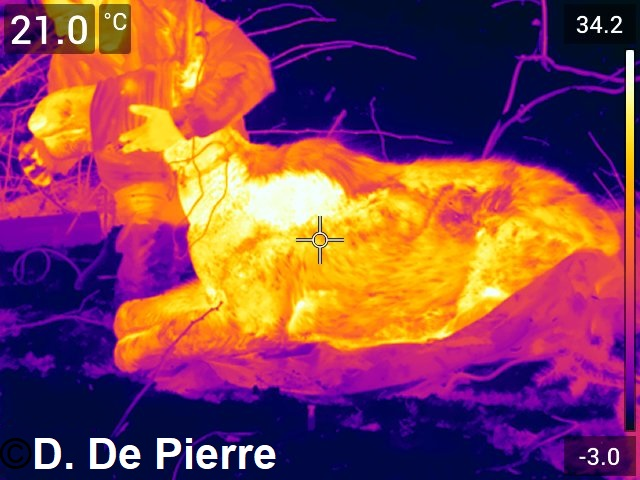
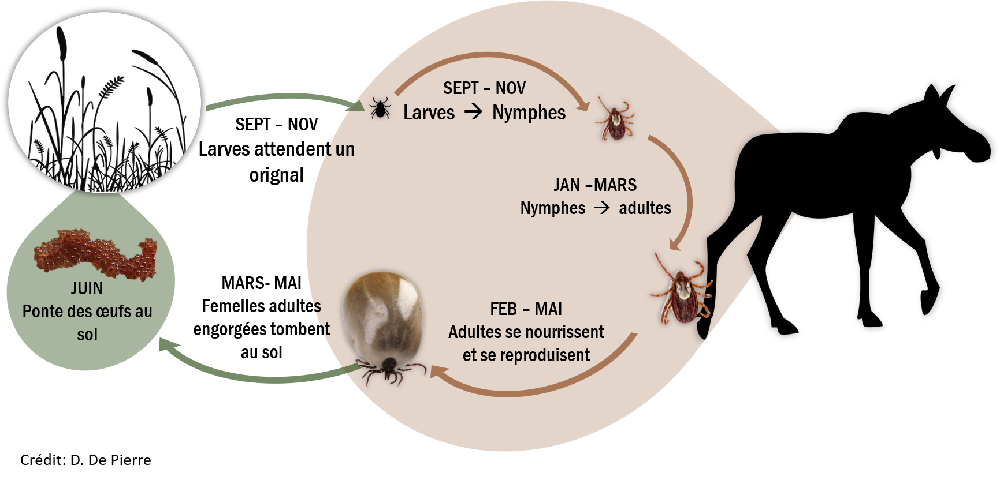
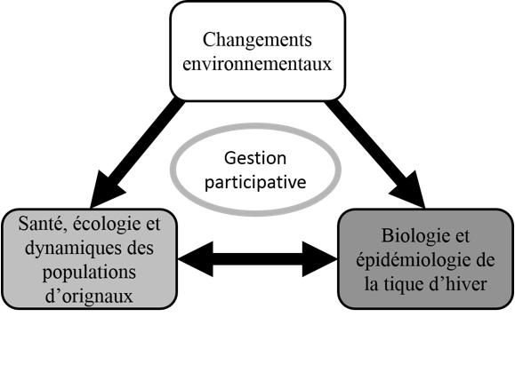

Partenariat de recherche sur les relations tique-orignal-climat
Comprendre et prédire la dynamique des interactions entre la tique d’hiver et les populations d’orignaux de l’est du Canada en fonction des conditions climatiques actuelles et anticipées
  
Contexte et objectif du projet
Le déplacement de nombreuses espèces vers les pôles et le devancement dans le temps des étapes de leurs cycles vitaux sont des conséquences du réchauffement climatique qui entraînent une modification des interactions entre les espèces, notamment les interactions parasites-hôtes. La tique d’hiver (Dermacentor albipictus) est un acarien qui parasite les grands vertébrés et peut entraîner des mortalités chez certaines espèces peu adaptées à sa présence en région boréale, notamment l’orignal (Alces alces). Cette situation soulève des enjeux à travers l’aire de répartition de l’orignal où il contribue à l’appartenance au territoire, à l’identité culturelle et à la cohésion sociale, ainsi qu’à la vitalité économique des régions.
Ce programme de recherche et de développement vise à comprendre et prédire la dynamique des interactions entre la tique d’hiver et les populations d’orignaux de l’est du Canada en fonction des conditions climatiques présentes et anticipées.

Figure 1. Cycle vital de la tique d’hiver.
Axes d’intérêts
- Santé, dynamique et écologie des populations d’orignaux
- Condition physique, dynamique des populations et utilisation de l’espace par les orignaux en réponse aux variations des infestations par la tique d’hiver
- Biologie et épidémiologie de la tique d’hiver
- Épidémiologie de la tique d’hiver en relation avec les autres parasites, l’abondance des orignaux et les changements environnementaux
- Gestion participative
- Développement d’une approche de science participative pour multiplier la résolution spatiotemporelle du suivi des infestations et améliorer notre capacité d’adaptation aux changements écologiques.

Figure 2. Insertion des axes d’intérêt du projet de recherche dans le schéma conceptuel représentant le triangle épidémiologique à la base des interactions reliant la tique d’hiver, l’orginal et l’écosystème où cohabitent les deux espèces.
Approche méthodologique
Notre méthode s’appuie sur le suivi par télémétrie satellite d’orignaux, notamment les veaux qui sont plus susceptibles à la tique, dans 5 populations le long d’un gradient de latitude allant du sud du Nouveau-Brunswick (45° N) au nord du fleuve Saint-Laurent (47,5° N; figure 3.). Nous manipulerons expérimentalement la charge de tiques par l’application d’un pesticide sur la moitié des orignaux capturés afin de distinguer les effets de l’environnement régional de ceux du niveau d’infestation. Nous obtiendrons ainsi une variation interannuelle et interrégionale des conditions environnementales propices ou non aux infestations des orignaux par la tique d’hiver.
Nos travaux mèneront notamment à la formulation de recommandations pour moduler les interventions dans les milieux à valeurs fauniques élevés afin de réduire les risques de cooccurrence des tiques et des orignaux.
Figure 3. Carte interactive des cinq secteurs de captures de veaux et de femelles adultes pour l’hiver 2019. Cliquez sur un point pour obtenir davantage d’information.
Contacts
Jean-Pierre Tremblay, Professeur titulaire (Page Web)
: +1-418-656-2131 #403629
: jean-pierre.tremblay@bio.ulaval.ca
: Département de biologie, Université Laval 1045 av. de la médecine, Québec (Qc), G1V 0A6
Questions générales (incluant envoi d’informations, photos, formulaires) :